J’ai découvert deux pépites botaniques situés à une trentaine de minutes d’Orléans, à Meung-sur-Loire. J'y ai visité les Jardins de Roquelin et l'Arboretum d'Ilex, deux lieux différents mais qui offrent tous les deux une véritable parenthèse de calme et de fraîcheur.
01 — Les jardins de Roquelin
J'ai commencé par les Jardins de Roquelin, imaginés par Stéphane Chassine, qui a transformé un ancien champ en un jardin à l'anglaise planté à partir de 2002. Plus de 450 variétés de roses anciennes y côtoient des vivaces et des arbustes d'ornement, présentant un mélange de couleurs et de parfums. On prend plaisir à flâner dans les allées, à s'arrêter devant les massifs ou tunnels végétalisés qui offrent un décor féérique. Le jardin est parfaitement entretenu tout en laissant la nature suivre son cours et où l'on sent la passion qui anime ce lieu.
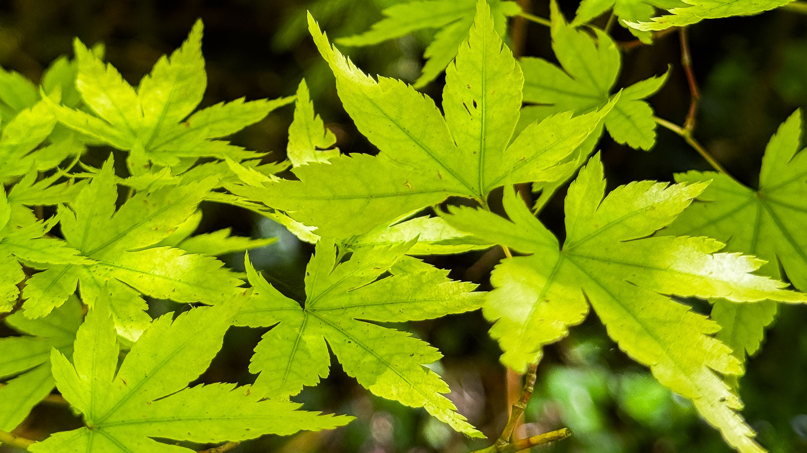
Érable du Japon
02 — Le jardin d'arboretum d'Ilex
La visite s'est poursuivie à l'Arboretum d'Ilex, un jardin traversé par la Mauves où l'eau, les arbres, les pontset les collections botaniques créent une atmosphère incroyablement apaisante. Une collection de 500 variétés d'ilex (houx) reconnue depuis 1991 collection nationale par le Conservatoire des Collections Végétales Spécialisées, a donné son nom au jardin. À chaque détour du chemin, les points de vue semblent tout droit sortis d'une carte postale. J'ai particulièrement aimé les différentes variétés d'érables du Japon, dont les feuillages offrent une palette de verts, d'oranges et de rouges qui rendent le jardin magnifique toute l'année.
03 — Informations pratiques
J'ai aussi beaucoup apprécié l'accueil reçu dans les deux jardins, chaleureux et passionné. Aujourd'hui, Stéphane Chassine, créateur des Jardins de Roquelin, assure également la gestion de l'Arboretum d'Ilex, et cela se ressent dans le soin apporté à ces deux espaces, qui invitent autant à la contemplation qu'à la découverte botanique.
Petit conseil si vous souhaitez les découvrir : il existe un Pass Jardins à 11 € par personne, qui permet de visiter les deux sites. Je trouve que c'est une très belle façon de profiter pleinement de cette escapade végétale, car les deux jardins sont complémentaires. Je suis repartie avec des centaines d'images en tête, beaucoup d'inspiration ainsi que l'envie d'y retourner à une autre saison pour voir ces paysages se transformer.
Galerie
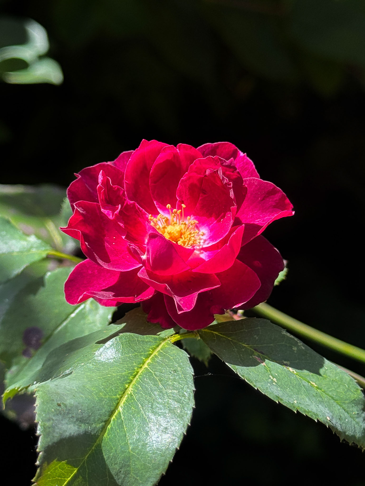
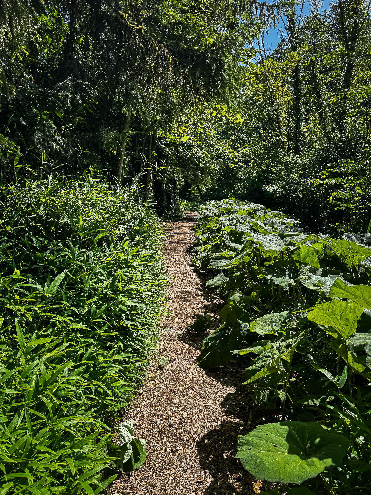
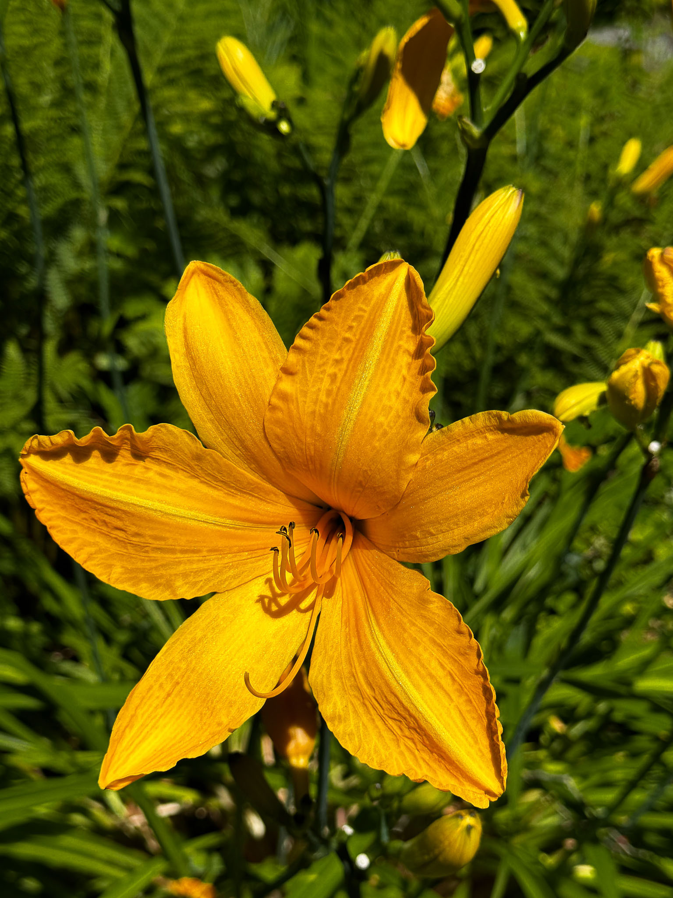
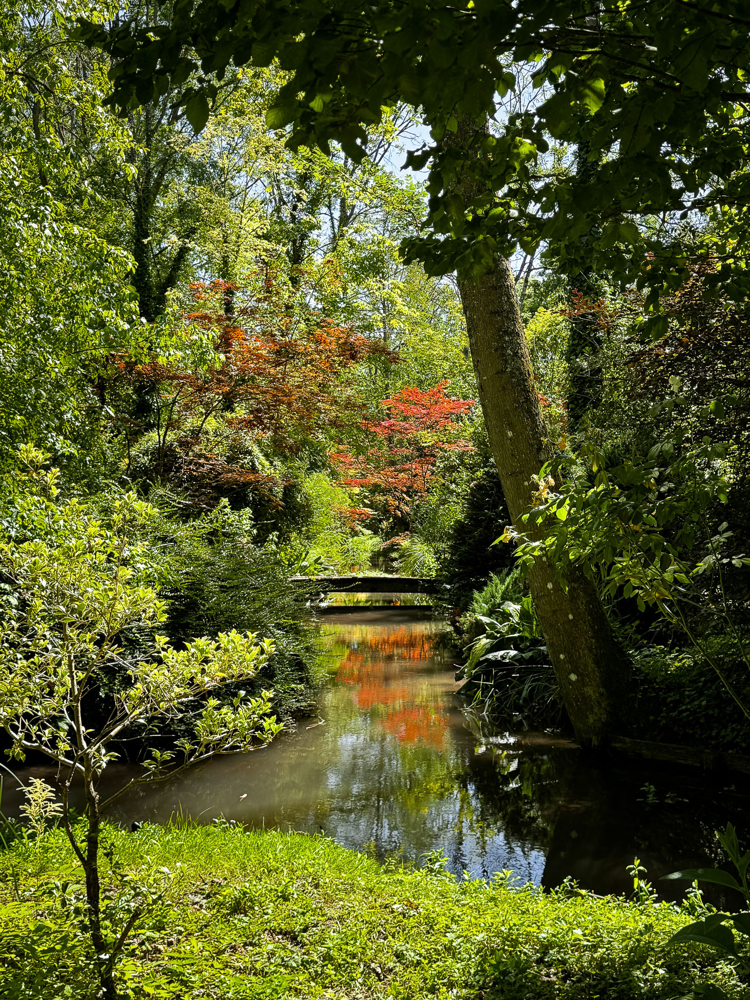
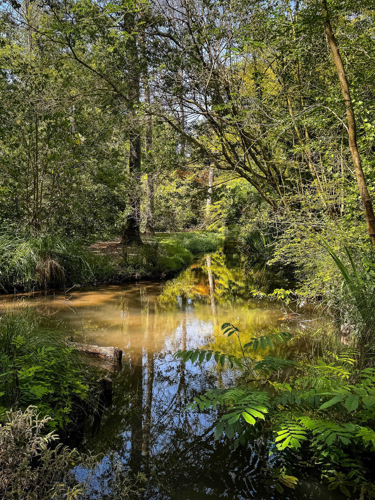
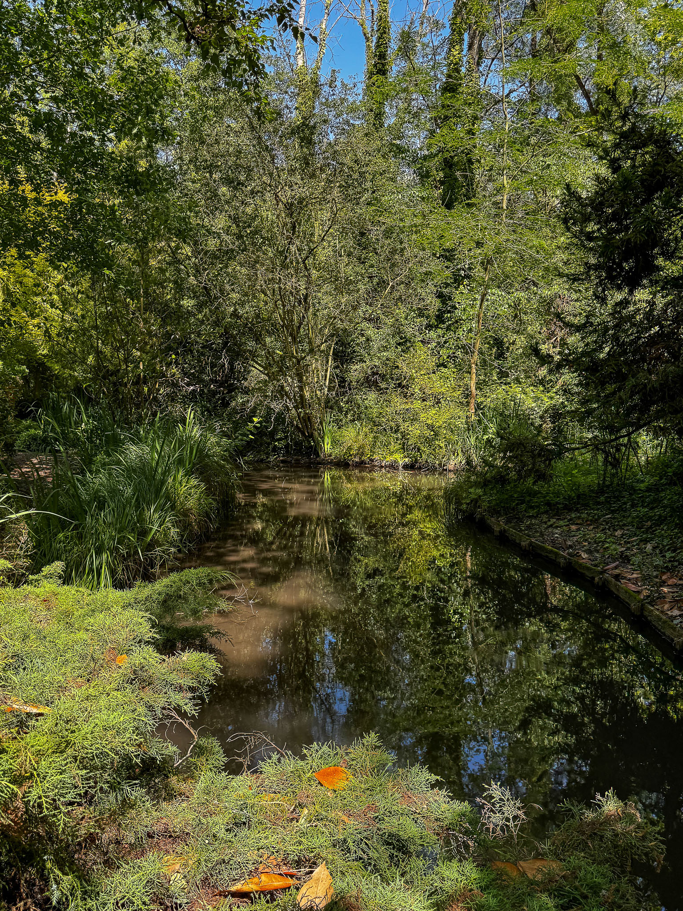
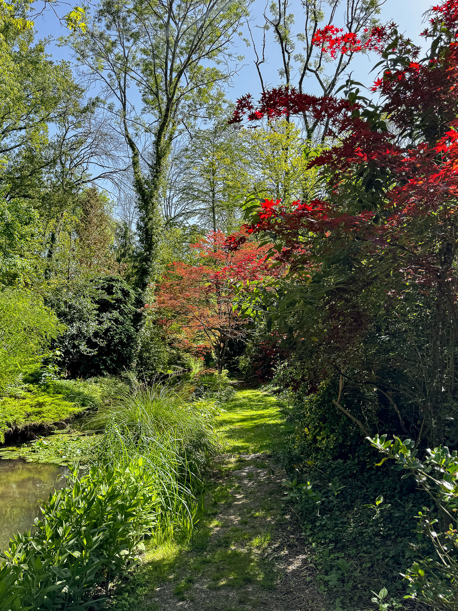
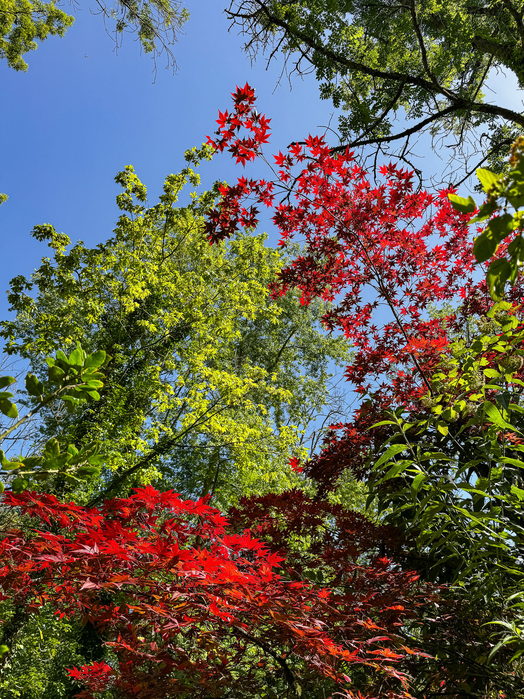
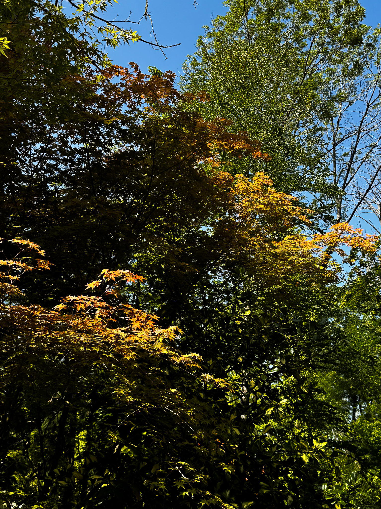
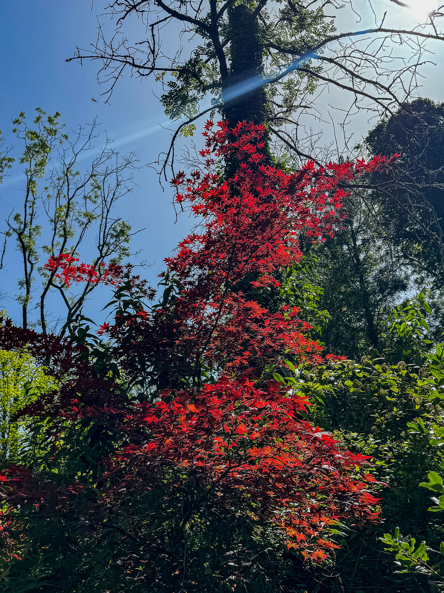
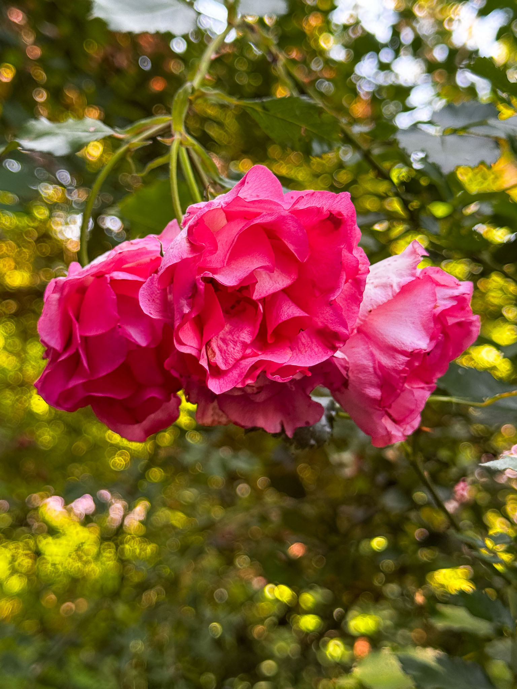
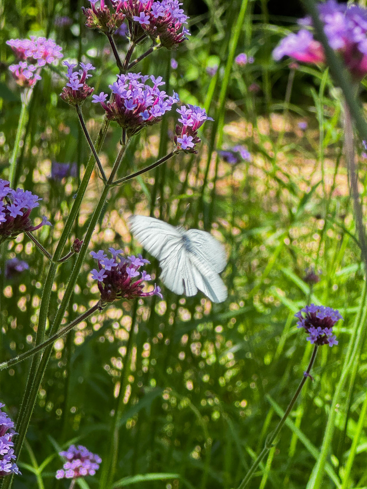